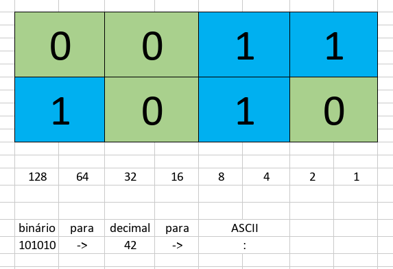
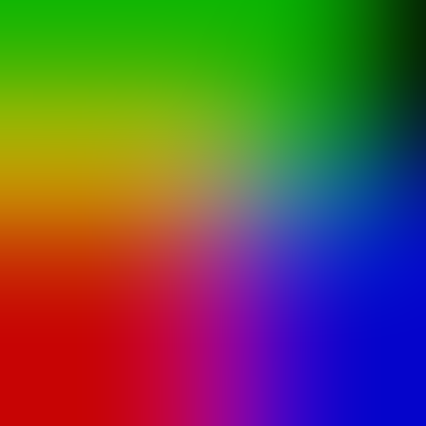

Disciplina: Produção de Conteúdos Multimédia
Aula 29/09/2022:
Exercício realizado na aula:
Conversão de números binários para formato decimal e correspondente caracter na tabela ASCII.
________________________________________________________________________________________________________________________________________
Aula 13/10/2022:
Formatos de imagem:
Exercício realizado na aula:
Com o uso do programa Gimp foi feita uma sobreposição de camadas com as cores primárias junto com um desfoque Gaussiano.